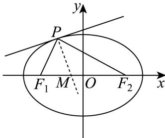
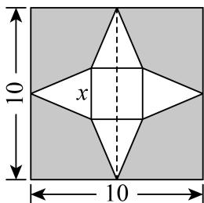
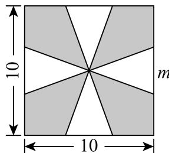
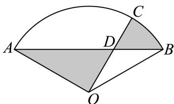
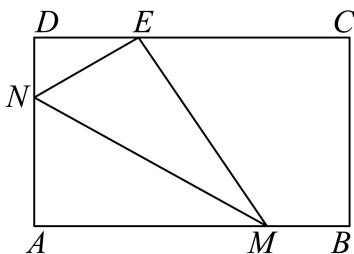

基本函数运算、定义域与分段求值
先确定定义域与函数类型，递归分段先归约到基本区间；换底与定点不依赖求导。
宝山 · 第4题 ★☆☆☆☆ · 教师预估
已知函数 :f(x)={x2+2 , x<1,f(x−2) , x≥1 则f (4)=
考点：递归函数代入求值。
难度依据：递归分段函数求值；直接运用定义或基础公式，推理链短
核查说明：已人工阅读完整底稿题干及原解，未逐页对照正式PDF，分类不等于数学终审。
展开答案与解析
宝山 · 第7题 ★★☆☆☆ · 教师预估
本题资料或解析有待核事项，预览不可作为已审定成品。
已知函数 ξ:y=ax+1−loga(x+2)+1(a>0 且 .a=1) )的图像经过定点A，则点A的坐标为
考点：指数对数定点。
难度依据：指数对数混合函数定点；需一次转化并结合定义域或几何条件计算
核查说明：解析将-log_a(1)+1排为-log_a(1+1)，括号位置错误，答案定点不据此改动。；已人工阅读完整底稿题干及原解，未逐页对照正式PDF，分类不等于数学终审。；历史分类审查记录（不把旧记录直接判为当前未解决）：解析将-log_a(1)+1排为-log_a(1+1)，括号位置错误，答案定点不据此改动。 本次只归组，未修改题干、答案或专题归属；上述具体疑点仍交回源/数学复核处理。
展开答案与解析
徐汇 · 第4题 ★☆☆☆☆ · 教师预估
已知幂函数y = f(x)的图像过点 (3,33) ，则该幂函数的值域是
考点：幂函数由点求式与值域。
难度依据：幂函数解析式及值域；直接运用定义或基础公式，推理链短
核查说明：已人工阅读完整底稿题干及原解，未逐页对照正式PDF，分类不等于数学终审。
展开答案与解析
松江 · 第1题 ★☆☆☆☆ · 教师预估
已知集合A = {−1, 0, 1, 2}, B={x∣y=log2x} ，则A ∩ B = .
考点：对数定义域与交集。
难度依据：集合交集与对数定义域；直接运用定义或基础公式，推理链短
核查说明：已人工阅读完整底稿题干及原解，未逐页对照正式PDF，分类不等于数学终审。
展开答案与解析
金山 · 第8题 ★★☆☆☆ · 教师预估
已知 {an} 是等差数列，若 a˙3,a7 分别是函数 y=x2−4x+ 2的两个零点，则 a5=
考点：对称项等差中项。
难度依据：等差中项与韦达关系；需一次转化并结合定义域或几何条件计算
核查说明：已人工阅读完整底稿题干及原解，未逐页对照正式PDF，分类不等于数学终审。
展开答案与解析
金山 · 第10题 ★★★☆☆ · 教师预估
本题资料或解析有待核事项，预览不可作为已审定成品。
已知函数 ⋅y=g(x) 的图象是折线段 ABC ，且 A(0,0),B(21,21),C(1,0) ，则函数y=x⋅g(x)(0≤x≤1) )的图象与x轴围成的图形面积为
考点：分段二次函数与对称面积转化。
难度依据：分段函数曲边面积；需连接多个条件或多步模型转化
核查说明：面积转化依赖题图标点，而图中A与题干A重名；需核图并清晰区分辅助点。；已人工阅读完整底稿题干及原解，未逐页对照正式PDF，分类不等于数学终审。；历史分类审查记录（不把旧记录直接判为当前未解决）：面积转化依赖题图标点，而图中A与题干A重名；需核图并清晰区分辅助点。 本次只归组，未修改题干、答案或专题归属；上述具体疑点仍交回源/数学复核处理。
展开答案与解析
长宁 · 第7题 ★★☆☆☆ · 教师预估
本题资料或解析有待核事项，预览不可作为已审定成品。
已知 log189=a，18b=5，用 a,b 表示 log3645 为____。
考点：对数换底和指数转对数。
难度依据：对数换底和指数转对数；需一次代换或条件转换后计算
核查说明：题干已回源；原解析未全面数学审校，公式及其他问题仍需处理。；题干log18、指数条件及目标log36有严重TeX乱码，回源后方可发布。；已人工阅读底稿题干和原解；未逐页对照PDF，不作为数学终审。；历史分类审查记录（不把旧记录直接判为当前未解决）：题干log18、指数条件及目标log36有严重TeX乱码，回源后方可发布。；题干已回源；原解析未全面数学审校，公式及其他问题仍需处理。 当前底稿已有回源补丁，涉及question；具体修复范围以底稿patches和2025二模-题干回源补丁-首批.json为准。本题仍按可辨数学任务归组，不据分组宣称数学已审定。
展开答案与解析
闵行 · 第8题 ★★★☆☆ · 教师预估
已知函数 ⋅f(x)={(1−2m)x+3m,x<1x2,x≥1 的值域为R，则m的取值范围是
考点：分段函数值域拼接。
难度依据：分段函数值域拼接；需组合两类关系并检查区间或等号
核查说明：已人工阅读底稿题干和原解；未逐页对照PDF，不作为数学终审。
展开答案与解析
静安 · 第5题 ★★☆☆☆ · 教师预估
已知log3 2 = a，则log2 48 = ．（请用含a的代数式表达）
考点：对数换底运算。
难度依据：对数换底运算；需一次代换或条件转换后计算
核查说明：已人工阅读底稿题干和原解；未逐页对照PDF，不作为数学终审。
展开答案与解析
奇偶单调、函数方程与差分
用结构条件归约自变量范围，赋值、比较与差分须保持定义域一致。
宝山 · 第5题 ★☆☆☆☆ · 教师预估
若函数 f˙(x)=(m−1)x2+3x+(2−n) 是奇函数，则m+n=
考点：奇函数偶次项系数为零。
难度依据：多项式奇偶性；直接运用定义或基础公式，推理链短
核查说明：已人工阅读完整底稿题干及原解，未逐页对照正式PDF，分类不等于数学终审。
展开答案与解析
宝山 · 第14题 ★★☆☆☆ · 教师预估
“a>b”的一个必要非充分条件是（ ）。
A. ln(a−b)>0
B. 2a>2b
C. (21)a−b≤1
D. a3>b3
考点：不等式及函数单调性判断条件关系。
难度依据：必要非充分条件；需一次转化并结合定义域或几何条件计算
核查说明：已人工阅读完整底稿题干及原解，未逐页对照正式PDF，分类不等于数学终审。
展开答案与解析
崇明 · 第18题 ★★★☆☆ · 教师预估
已知 ∣f(x)=log3(x+a)+log3(6−x)
(1) (6分)是否存在实数a，使得函数 y=f(x) 是偶函数？若存在，求实数a的值，若不存在，请说明理由；
(2) (8分)若a > −3且 .a=0 ，解关于x的不等式 f(x)≤f(6−x)
考点：(1)定义域对称与偶函数；(2)真数约束及参数符号分类。
难度依据：对数函数偶性及含参不等式；需连接多个条件或多步模型转化
核查说明：已人工阅读完整底稿题干及原解，未逐页对照正式PDF，分类不等于数学终审。
展开答案与解析
杨浦 · 第17题 ★★★☆☆ · 教师预估
本题资料或解析有待核事项，预览不可作为已审定成品。
已知函数 y=f(x) 是定义在R上的偶函数.
(1) (6分)当 x∈[0,+∞) 时， f(x)=log2(x+1) ，求 x∈(−∞,0) 时， y=f(x) 的表达式；
(2) (8分)当 x∈[0,+∞) 时， f(x)=x3+2025x ，若实数t满足 f(3t−2)<f(t−1) ，求t的取值范 围.
考点：(1)偶性补全解析式；(2)偶性单调性转绝对值不等式。
难度依据：偶函数与单调性；需连接多个条件或多步模型转化
核查说明：第二问平方展开系数应为8t^2，底稿写18t^2，与解集不一致，须修复。；已人工阅读完整底稿题干及原解，未逐页对照正式PDF，分类不等于数学终审。；历史分类审查记录（不把旧记录直接判为当前未解决）：第二问平方展开系数应为8t^2，底稿写18t^2，与解集不一致，须修复。 本次只归组，未修改题干、答案或专题归属；上述具体疑点仍交回源/数学复核处理。
展开答案与解析
松江 · 第14题 ★☆☆☆☆ · 教师预估
下列函数中，在区间(0, +∞)上为严格增函数的奇函数的是（ ）
A. y=ln∣x∣
B. y=∣x−1∣
C. y=2x1
D. y=−x1
考点：基本函数的奇偶与单调。
难度依据：函数奇偶性和单调性；直接运用定义或基础公式，推理链短
核查说明：已人工阅读完整底稿题干及原解，未逐页对照正式PDF，分类不等于数学终审。
展开答案与解析
松江 · 第16题 ★★★★☆ · 教师预估
本题资料或解析有待核事项，预览不可作为已审定成品。
定义在 (0,+∞) 上的函数 ⋅y=f(x) 满足 f(x+1)=f(x)−x ，当 0<x≤1H] ， f(x)=x−x+1 有以下两个命题：
①当n为正整数时， f(n)=2−n2+n+2 ；
②若函数 y=f(x) 在区间(0,k]内有3个极大值点，则k的取值范围是 [3673,3)
则以下选项正确的是（ ）
A. ①是真命题，②是假命题
B. 两个都是真命题
C. ①是假命题，②是真命题
D. 两个都是假命题
考点：递推函数各区间极值与整数值。
难度依据：递推函数分段表达与极值；需参数分类、构造递推或综合最值分析
核查说明：函数可不连续，端点极大值定义和截断区间口径须注意；原解局部导数不等式有字母OCR错误。；已人工阅读完整底稿题干及原解，未逐页对照正式PDF，分类不等于数学终审。；历史分类审查记录（不把旧记录直接判为当前未解决）：函数可不连续，端点极大值定义和截断区间口径须注意；原解局部导数不等式有字母OCR错误。 本次只归组，未修改题干、答案或专题归属；上述具体疑点仍交回源/数学复核处理。
展开答案与解析
浦东 · 第14题 ★★☆☆☆ · 教师预估
已知a、 b∈R, ，则 ρ^a>bρ^ 是 ∗lga>lgb′ ”的（ ）条件
A. 充分非必要条件
B. 必要非充分条件
C. 充要条件
D. 既非充分也非必要条件
考点：对数比较与定义域。
难度依据：充分必要条件；需一次转化并结合定义域或几何条件计算
核查说明：已人工阅读完整底稿题干及原解，未逐页对照正式PDF，分类不等于数学终审。
展开答案与解析
浦东 · 第17题 ★★★☆☆ · 教师预估
已知函数 y=f(x) 的表达式 f(x)=ex+11−a.
(1) (7分)若函数 y=f(x) 是奇函数，求实数a的值；
(2) (7分)对任意实数 ⋅x∈[−1,1] ，不等式 f(x)≤ 0恒成立，求实数a的取值范围
考点：(1)函数奇偶性求参数；(2)单调性求区间恒成立参数。
难度依据：指数函数奇偶性与恒成立；需连接多个条件或多步模型转化
核查说明：已人工阅读完整底稿题干及原解，未逐页对照正式PDF，分类不等于数学终审。
展开答案与解析
虹口 · 第14题 ★☆☆☆☆ · 教师预估
下列函数中为奇函数的是（ ）
A. y=x
B. y=x−2
C. y=sin(x+2π)
D. y=tan(x+π)
考点：定义域对称及三角恒等。
难度依据：基本函数奇偶性；直接运用定义或基础公式，推理链短
核查说明：已人工阅读完整底稿题干及原解，未逐页对照正式PDF，分类不等于数学终审。
展开答案与解析
金山 · 第15题 ★★★☆☆ · 教师预估
已知定义在R上的函数 y=f(x) ，满足以下两个条件：（1）f(x) > 0对任意x ∈ R恒成立，且f(1)=1; (2) 对任意 x1,x2∈R 都有 f˙(x1+2x2)=4f(x1)⋅f2(x2) ，则下列关于函数 ⋅y=f(x) )的表述中正确的个数为（ ）① f(0)=21; 2◯f(x)⋅f(−x)=41 ；③函数y = f(x)有最小值.
A. 0
B. 1
C. 2
D. 3
考点：函数方程赋值与构造反例。
难度依据：抽象函数赋值与最值反例；需连接多个条件或多步模型转化
核查说明：已人工阅读完整底稿题干及原解，未逐页对照正式PDF，分类不等于数学终审。
展开答案与解析
金山 · 第17题 ★★★☆☆ · 教师预估
已知函数 y=f(x) 是定义在R上的奇函数，当 x>0 时， f(x)=log2x
(1) (6分)求 f(−2)+f(0) 的值；
(2) (8分)若 :g(x)=f(x)⋅f(4x),x∈[1,8] ，求函数 (y=g(x) 的值域.
考点：(1)奇性与原点值；(2)对数换元为二次函数求值域。
难度依据：奇函数与对数换元最值；需连接多个条件或多步模型转化
核查说明：已人工阅读完整底稿题干及原解，未逐页对照正式PDF，分类不等于数学终审。
展开答案与解析
闵行 · 第10题 ★★★☆☆ · 教师预估
已知数列 {an} 为等差数列，数列 {bn} 为等比数列，且 a1=b1=1 a2=b2=t ，若 a˙6+b6>38 则实数t的取值范围为
考点：等差等比通项；幂函数单调比较。
难度依据：等差等比通项；幂函数单调比较；需组合两类关系并检查区间或等号
核查说明：已人工阅读底稿题干和原解；未逐页对照PDF，不作为数学终审。
展开答案与解析
青浦 · 第14题 ★★☆☆☆ · 教师预估
若正数 m,n,a 均不为1，则下列不等式中与 ∗m>n∗ ”等价的是（ ）
A. am>an
B. logam>logan
C. ma>na
D. logma>logna
考点：指数、对数及幂函数单调性。
难度依据：指数对数幂函数单调性；需完成一次转化或结合基本条件后计算
核查说明：已人工阅读底稿题干和解析；尚未逐页对照原PDF，不作为数学终审。
展开答案与解析
静安 · 第16题 ★★★★☆ · 教师预估
设函数y = f (x)的定义域为R，若f (0) = 2025，且对任意 x∈R ，满足 f(x+1)−f(x)≤2x f(x+2)−f(x)≥3×2x ，则f(2025)的值为（ ）
A. 22025+2024
B. 22024+2025
C. 22025+2025
D. 以上答案均不对
考点：函数差分不等式夹逼；累加与等比求和。
难度依据：函数差分不等式夹逼；累加与等比求和；需多步建模、分类或参数约束
核查说明：已人工阅读底稿题干和原解；未逐页对照PDF，不作为数学终审。
展开答案与解析
黄浦 · 第17题 ★★★☆☆ · 教师预估
本题资料或解析有待核事项，预览不可作为已审定成品。
已知f (x) = 2x
(1) (6分)若 f(x)−f(2−x)=3 ，求x的值；
(2) (8分)是否存在实数a，使函数 [y=f(x)+af(−x)] 是奇函数？请说明理由
考点：（1）指数方程换元；（2）奇函数必要条件和验证。
难度依据：指数方程与奇函数构造；需组合两类关系并检查区间或等号
核查说明：题干f(x)=2x丢失指数，原解为2^x，实质影响题意，须回源。；已人工阅读底稿题干和原解；未逐页对照PDF，不作为数学终审。；历史分类审查记录（不把旧记录直接判为当前未解决）：题干f(x)=2x丢失指数，原解为2^x，实质影响题意，须回源。 本次只归组，未修改题干、答案或专题归属；上述具体疑点仍交回源/数学复核处理。
展开答案与解析
极值、零点与区间值域的参数讨论
按单调区间、分段接点及开闭端点讨论根与最值，任意存在转为值域包含。
宝山 · 第18题 ★★★☆☆ · 教师预估
已知函数 f(x)=ax ，（a > 0且 .a=1)
(1) (6分)若 f(2)=4. ，求方程 f(x)−f(−x)=2 的解；
(2) (8分)已知0 <a<1 ，若关于x的不等式 [f(mx)]2≥f(x2+1)⋅f(x+3) 在区间[1, 2]上恒成立，求实数m的最大值.
考点：(1)指数代换解方程；(2)指数单调性及恒成立参数。
难度依据：指数方程与区间恒成立；需连接多个条件或多步模型转化
核查说明：已人工阅读完整底稿题干及原解，未逐页对照正式PDF，分类不等于数学终审。
展开答案与解析
崇明 · 第10题 ★★★☆☆ · 教师预估
本题资料或解析有待核事项，预览不可作为已审定成品。
已知 f(x)={−x2+ax,x≤1ax−1,x>1 ，若函数 y=f(x) 有两个极值点，则实数a的取值范围是
考点：二次一次拼接处极值。
难度依据：分段函数极值参数；需连接多个条件或多步模型转化
核查说明：分段函数TeX结构与约束不等式尾部破损，需要修复。；已人工阅读完整底稿题干及原解，未逐页对照正式PDF，分类不等于数学终审。；历史分类审查记录（不把旧记录直接判为当前未解决）：分段函数TeX结构与约束不等式尾部破损，需要修复。 本次只归组，未修改题干、答案或专题归属；上述具体疑点仍交回源/数学复核处理。
展开答案与解析
徐汇 · 第16题 ★★★★☆ · 教师预估
本题资料或解析有待核事项，预览不可作为已审定成品。
已知函数 y=f(x) 的定义域和值域都为R，且图像是一条连续不断的曲线，其导函数 y=f′(x) 的值如下表：
| x |
(−∞,x1) |
x1 |
(x1,x2) |
x2 |
(x2,+∞) |
| f′(x) |
+ |
0 |
− |
0 |
+ |
设 D⊆R，若集合 {y∣y=f(x),x∈D}={a,b,c}，其中 a,b,c 为常数，则符合要求的集合 D 的个数不可能是（ ）。
A. 3
B. 27
C. 63
D. 343
考点：导数表判断原像数与集合计数。
难度依据：导数符号表与方程根数；需参数分类、构造递推或综合最值分析
核查说明：题干所指导数数值表未保留，无法独立判断反像个数限制；源解排除27的依据写得不全。；已人工阅读完整底稿题干及原解，未逐页对照正式PDF，分类不等于数学终审。；历史分类审查记录（不把旧记录直接判为当前未解决）：题干所指导数数值表未保留，无法独立判断反像个数限制；源解排除27的依据写得不全。 当前底稿已有回源补丁，涉及question；具体修复范围以底稿patches和2025二模-缺表回源补丁-第三批.json,2025二模-残余OCR回源补丁-第四批.json为准。本题仍按可辨数学任务归组，不据分组宣称数学已审定。
展开答案与解析
徐汇 · 第18题 ★★★☆☆ · 教师预估
已知函数 ⋅y=f(x) ，其中 f(x)=log2x
(1) (6分)解关于x的不等式 f(3x−2)<f(2x+1) ；
(2) (8分)若存在唯一的实数x0，使得 f(x0),f(x0−a),f(2) 依次成等差数列，求实数a的取值范围.
考点：(1)对数单调性解不等式；(2)等差中项转化方程唯一根。
难度依据：对数单调性与方程根数；需连接多个条件或多步模型转化
核查说明：已人工阅读完整底稿题干及原解，未逐页对照正式PDF，分类不等于数学终审。
展开答案与解析
普陀 · 第12题 ★★★☆☆ · 教师预估
E˙a∈R ，函数y = f(x)的表达式为 f(x)={ex,x>0x+a1,x<0, 若函数 ⋅˙g(x)=f(x)f(x+1)−1 恰有三个零点，则a的取值范围是
考点：分段函数零点个数。
难度依据：分段函数零点分类；需连接多个条件、建模或作分类讨论
核查说明：已人工阅读底稿题干和解析；尚未逐页对照原PDF，不作为数学终审。
展开答案与解析
松江 · 第12题 ★★★★☆ · 教师预估
本题资料或解析有待核事项，预览不可作为已审定成品。
设 a∈R，若函数
f(x)={sin(2πx−2πa),x2−2(a+1)x+a2+5,x<a,x≥a
在区间 (0,+∞) 内恰好有6个零点，则 a 的取值范围是________。
考点：正弦与二次函数分段零点计数。
难度依据：含参分段函数零点计数；需参数分类、构造递推或综合最值分析
核查说明：源解把二次分支只有一个零点仅等同于重根，漏考虑a>5/2时一根落于x<a；例如a=3时正弦分支5根、二次分支1根，共6根，与源答(2,5/2]冲突。需核正式题干后修解。；已人工阅读完整底稿题干及原解，未逐页对照正式PDF，分类不等于数学终审。；历史分类审查记录（不把旧记录直接判为当前未解决）：源解把二次分支只有一个零点仅等同于重根，漏考虑a>5/2时一根落于x<a；例如a=3时正弦分支5根、二次分支1根，共6根，与源答(2,5/2]冲突。需核正式题干后修解。 本次只归组，未修改题干、答案或专题归属；上述具体疑点仍交回源/数学复核处理。
展开答案与解析
虹口 · 第18题 ★★★☆☆ · 教师预估
本题资料或解析有待核事项，预览不可作为已审定成品。
已知函数 y=f(x) 的表达式为 ∣f(x)=2x,x∈R
(1) (6分)解不等式： log2[f(x)−1]+log2[f(x)]≤1 ；
(2) (8分)若存在实数 x0∈[0,2π] ，使得 f(msinx0),f(2+sin2x0),f(mcosx0) 成等比数列，求实数m的最小值.
考点：(1)指数换元与对数定义域；(2)等比中项、三角代换与参数最小。
难度依据：指数对数方程不等式；需连接多个条件或多步模型转化
核查说明：原解第二问指数等式跨行截断，需修复，避免将sin2x丢失。；已人工阅读完整底稿题干及原解，未逐页对照正式PDF，分类不等于数学终审。；历史分类审查记录（不把旧记录直接判为当前未解决）：原解第二问指数等式跨行截断，需修复，避免将sin2x丢失。 本次只归组，未修改题干、答案或专题归属；上述具体疑点仍交回源/数学复核处理。
展开答案与解析
长宁 · 第12题 ★★★★☆ · 教师预估
已知函数 ∇[y=f(x)Hˉ]y=g(x) ，其中 f(x)=log2x ，且 y=g(x) 是定义在R上的函数，其图像关于原点对称，当 x∈(0,1] ]时， g(x)=x2−mx−m+5 ．若对任意的 x1∈[21,2] ，存在 x2∈[−1,1] ，使得 f(x1)=g(x2) ，则m的取值范围是
考点：奇函数值域包含与参数分类；任意存在量词转值域包含。
难度依据：奇函数值域包含与参数分类；任意存在量词转值域包含；需多步建模、分类或参数约束
核查说明：已人工阅读底稿题干和原解；未逐页对照PDF，不作为数学终审。
展开答案与解析
闵行 · 第12题 ★★★★★ · 教师预估
本题资料或解析有待核事项，预览不可作为已审定成品。
定义 D=[a,b] 的区间长度为b−a．若 m<0 且关于x的不等式 ∣(x−1)3+m(x−1)∣≤1 6的解集的区间长度之和为T，则当T取最大值时，实数m的值为
考点：三次函数水平截线与区间总长；绝对值三次不等式。
难度依据：三次函数水平截线与区间总长；绝对值三次不等式；需证明新定义命题或完成复杂参数分类
核查说明：阈值16断裂为1和6；多处−12断裂；需核源。；已人工阅读底稿题干和原解；未逐页对照PDF，不作为数学终审。；历史分类审查记录（不把旧记录直接判为当前未解决）：阈值16断裂为1和6；多处−12断裂；需核源。 本次只归组，未修改题干、答案或专题归属；上述具体疑点仍交回源/数学复核处理。
展开答案与解析
青浦 · 第17题 ★★★☆☆ · 教师预估
本题资料或解析有待核事项，预览不可作为已审定成品。
对于函数 ⋅y=f(x) ，其中 f(x)=logax(a>0,a=1)
(1) (6分)若函数 y=f(x) 的图像过点(4,2)，求 f(2x−2)<f(x) 的解集；
(2) (8分)求证：当 a=2Hmod ，存在x使得 f(x+1),f(ax),f(x+2) 成等差数列.
考点：(1)对数函数单调性解不等式；(2)等差中项转化为对数方程。
难度依据：对数函数性质与方程；需连接多个条件、建模或作分类讨论
核查说明：第二问源解仅由判别式正推出存在，尚需验证所得根满足对数真数为正。；已人工阅读底稿题干和解析；尚未逐页对照原PDF，不作为数学终审。；历史分类审查记录（不把旧记录直接判为当前未解决）：第二问源解仅由判别式正推出存在，尚需验证所得根满足对数真数为正。 本次只归组，未修改题干、答案或专题归属；上述具体疑点仍交回源/数学复核处理。
展开答案与解析
黄浦 · 第12题 ★★★★☆ · 教师预估
本题资料或解析有待核事项，预览不可作为已审定成品。
设a、b为常数， f(x)=∣a+sinx∣+∣a−sinx∣ ，若对任意的 ∣b∈(1,2) ，函数 y˙=f(x)−b 在区间[0,2π] 上恰有4个零点，则a的取值范围是
考点：含绝对值正弦方程根数；参数零点分类。
难度依据：含绝对值正弦方程根数；参数零点分类；需多步建模、分类或参数约束
核查说明：原解分段函数缺少2|sin x|分支，需补全。；已人工阅读底稿题干和原解；未逐页对照PDF，不作为数学终审。；历史分类审查记录（不把旧记录直接判为当前未解决）：原解分段函数缺少2|sin x|分支，需补全。 本次只归组，未修改题干、答案或专题归属；上述具体疑点仍交回源/数学复核处理。
展开答案与解析

导数定义、切线与曲线几何
用差商或导数确定斜率，切点、割线和曲线距离关系须显式连接。
奉贤 · 第21题 ★★★★★ · 教师预估
本题资料或解析有待核事项，预览不可作为已审定成品。
函数 y=f(x) ，其中 f(x)=x3−x2+21x+41 ，定义域是一切实数
(1) (4分)计算 .limh0hf(2+h)−f(2) 的值并指出其几何意义；
(2) (6分)当 x∈(0,21) 时，方程 f(x)=a+x 只有一个解，求实数a的取值范围；
(3) (8分)设 x1=0,xn+1=f(xn),y1=21,yn+1=f(yn),n≥1,n∈N,bn=yn−xn ．求证： ∑i=1nbn∈(0,1)
考点：(1)差商与导数；(2)方程根的唯一性；(3)递推数列夹逼与求和。
难度依据：差商与方程根；需构造新对象、综合多问并处理一般性或参数边界
核查说明：源PDF第（3）问与解析写sum b_n但展开按sum b_i；两种理解均在新解析处理，题干保持原样。；第三问求和底稿写sum b_n，解析使用sum b_i，含义不同，须核原卷。；已人工阅读底稿题干和解析；尚未逐页对照原PDF，不作为数学终审。；历史分类审查记录（不把旧记录直接判为当前未解决）：第三问求和底稿写sum b_n，解析使用sum b_i，含义不同，须核原卷。 本次只归组，未修改题干、答案或专题归属；上述具体疑点仍交回源/数学复核处理。
展开答案与解析
崇明 · 第21题 ★★★★★ · 教师预估
本题资料或解析有待核事项，预览不可作为已审定成品。
已知函数 (y=f(x) ，P为坐标平面上一点．若函数 ⋅y=f(x) 的图像上存在与P不同的一点Q，使得直线PQ是函数y = f(x)在点Q处的切线，则称点P具有性质 Mf
(1) (4分)若 f(x)=x2 ，判断点 P(1,0) 是否具有性质 Mf ，并说明理由；
(2) (6分)若 f(x)=2x3−4x2+2x ，证明：线段 x=21(−1≤y≤1) 上的所有点均具有性质 Mf ；
(3) (8分)若 f(x)=ex ，证明：“点 P(x,y) 具有性质 Mf′ ”的充要条件是 6y<ex,
考点：(1)二次曲线过点切线；(2)三次方程与切点存在；(3)指数函数切线及严格不等式。
难度依据：过点切线性质；需处理新定义或多对象联动，包含一般性证明及边界
核查说明：第二问有长串Omega代替代入表达式；第三问切点坐标、性质M_f与指数上下标破损，需回核修复。；已人工阅读完整底稿题干及原解，未逐页对照正式PDF，分类不等于数学终审。；历史分类审查记录（不把旧记录直接判为当前未解决）：第二问有长串Omega代替代入表达式；第三问切点坐标、性质M_f与指数上下标破损，需回核修复。 本次只归组，未修改题干、答案或专题归属；上述具体疑点仍交回源/数学复核处理。
展开答案与解析
徐汇 · 第21题 ★★★★★ · 教师预估
本题资料或解析有待核事项，预览不可作为已审定成品。
对于函数 y=h(x)，记 h(0)(x)=h(x)，h(1)(x)=(h(x))′，……，h(n+1)(x)=(h(n)(x))′（n∈N）。如果 n 是满足 h(n)(x)=h(x) 的最小正整数，则称 n 是函数 y=h(x) 的“最小导周期”。
(1)（4分）已知函数 y=f(x)，其中 f(x)=asin(x+t)+bcos(x+t)，求证：对任意实数 a,b,t，都有 f(4)(x)=f(x)；
(2)（6分）设 m,n∈R，g(x)=emx+ncosx，若函数 y=g(x) 的最小导周期为 2，记
M(a,b)=(a−b)2+(a+1+g(b))2,
当实数 a,b 变化时，求 M(a,b) 的最小值；
(3)（8分）设 ω>1，h(x)=cosωx，若函数 y=h(x) 满足 h(2)(x)≤x 对 x∈(0,+∞) 恒成立，且存在 x0∈(0,+∞) 使得 h(2)(x0)=x0，试用 ω 表示 x0，并证明 2ωπ<x0<ωπ。
考点：(1)三角函数四阶导数；(2)导周期判定与曲线到直线最短距离；(3)恒成立取等与驻点定位。
难度依据：最小导周期；需处理新定义或多对象联动，包含一般性证明及边界
核查说明：主agent已据PDF恢复题干；原解仍有下标与公式OCR残留，分类未进行完整数学终审。；已人工阅读完整底稿题干及原解，未逐页对照正式PDF，分类不等于数学终审。；历史分类审查记录（不把旧记录直接判为当前未解决）：主agent已据PDF恢复题干；原解仍有下标与公式OCR残留，分类未进行完整数学终审。 当前底稿已有回源补丁，涉及question；具体修复范围以底稿patches和2025两题题干回源补丁.json为准。本题仍按可辨数学任务归组，不据分组宣称数学已审定。
展开答案与解析

松江 · 第21题 ★★★★☆ · 教师预估
本题资料或解析有待核事项，预览不可作为已审定成品。
已知f ⋅(x)=ln(x−1)+x2a−34,a∈R.
(1) (4分)若x = 4是函数 y=f(x) 的一个极值点，求曲线y = f(x)在点P (4, f (4))处的切线方程；
(2) (6分)讨论函数 y=f(x) 的单调性；
(3) (8分)已知实数 [a=0, 若点A (x1, y1)、 B(x2,y2)(x1<x2) )是曲线 μ˙y=f(x) 上两点，直线AB的斜率为k，求证： x1<k1+k<x2
考点：(1)极值点与切线；(2)含参导数分类；(3)割线斜率与对数不等式。
难度依据：对数函数切线与含参单调；需参数分类、构造递推或综合最值分析
核查说明：解析第一问导数分式、第三问割线分母及函数名有OCR损坏，需逐式修复。；已人工阅读完整底稿题干及原解，未逐页对照正式PDF，分类不等于数学终审。；历史分类审查记录（不把旧记录直接判为当前未解决）：解析第一问导数分式、第三问割线分母及函数名有OCR损坏，需逐式修复。 当前底稿已有回源补丁，涉及answer_and_solution；具体修复范围以底稿patches和2025二模-解析公式回源补丁-第二批.json为准。本题仍按可辨数学任务归组，不据分组宣称数学已审定。
展开答案与解析
浦东 · 第21题 ★★★★★ · 教师预估
第(2)问现有条件与“求最小值”的问法存在冲突；仅作审题与勘误讨论，不作为正常求最小值练习。
定义域为 R 的可导函数 y=f(x) 满足：在曲线 y=f(x) 上存在三个不同的点 A(x1,y1)、B(x2,y2)、C(x3,y3)，其中 x1<x2<x3，使得直线 AC 与曲线 y=f(x) 在点 B 处的切线平行（或重合）。若 x1,x2,x3 成等差数列，则称 f(x) 为“等差函数”；若 x1,x2,x3 成等差数列且均为整数，则称 f(x) 为“整数等差函数”。
(1)（4分）设 f(x)=x2+x、g(x)=sinx，分别判断 f(x) 和 g(x) 是否为“整数等差函数”，直接写出结论；
(2)（6分）若 f(x)=x2+m1 为“整数等差函数”，求实数 m 的最小值；
(3)（8分）已知 y=f(x) 的导函数 y=f′(x) 在 R 上为增函数，且存在一个正常数 T，使得对任意 x∈R，f(x+T)=f′(x) 成立。证明：f(x) 为“等差函数”的充要条件是 f(x) 为常值函数。
考点：(1)新定义判断；(2)整数等差横坐标与切割线；(3)导数单调及平移关系证明等价。
难度依据：等差函数与整数等差函数；需处理新定义或多对象联动，包含一般性证明及边界
核查说明：第(2)问按现有题设所有m>0均成立，无最小值；原问法及源答案存在冲突。已独立补写反例证明，不作为正常求最小值练习。第(1)(3)问保留源解，未作本次全面审定。；第(2)问现有题设没有最小值，仍需正式勘误或额外限制；第(3)问按源解将增函数理解为非减，不擅称已确认正式题面。；第二问源解约去x2而未讨论x2=0：按现有题干取整数横坐标-1,0,1，对任意m>0割线及中点切线斜率均为0，因此m无最小值，与源答1/2冲突；必须核原卷是否遗漏条件。第三问原解多处x2下标丢失。；已人工阅读完整底稿题干及原解，未逐页对照正式PDF，分类不等于数学终审。；历史分类审查记录（不把旧记录直接判为当前未解决）：第二问源解约去x2而未讨论x2=0：按现有题干取整数横坐标-1,0,1，对任意m>0割线及中点切线斜率均为0，因此m无最小值，与源答1/2冲突；必须核原卷是否遗漏条件。第三问原解多处x2下标丢失。 本次只归组，未修改题干、答案或专题归属；上述具体疑点仍交回源/数学复核处理。
展开答案与解析
金山 · 第6题 ★☆☆☆☆ · 教师预估
若直线l是曲线 ⌊y=x−12 在x = 3处的切线，则l的斜率为
考点：切线斜率。
难度依据：导数几何意义；直接运用定义或基础公式，推理链短
核查说明：已人工阅读完整底稿题干及原解，未逐页对照正式PDF，分类不等于数学终审。
展开答案与解析
长宁 · 第16题 ★★★★☆ · 教师预估
本题资料或解析有待核事项，预览不可作为已审定成品。
椭圆具有如下光学性质：如图， F1(−c,0),F2(c,0) 分别是椭圆 a2x2+b2y2=1 1的左、右焦点，从点 F1 发出的光线在到达椭圆上的点P后，经过到达点的切线反射后经过点 F2 ，有以下两个命题：

①若P是椭圆上除长轴端点外的一点，设法线与x轴的交点为M(t,0)，则 t∈(−ac2,ac2)
②若从 F1 发出的光线，经椭圆两次反射后，第一次回到 F1 所经过的路程为8c，则该椭圆的离心率为21 ；
则以下说法正确的是（ ）
A. ①是真命题，②是真命题
B. ①是真命题，②是假命题
C. ①是假命题，②是真命题
D. ①是假命题，②是假命题
考点：椭圆切线法线与光学性质；椭圆函数求导。
难度依据：椭圆切线法线与光学性质；椭圆函数求导；需多步建模、分类或参数约束
核查说明：原解法线斜率法除以x₀，x₀=0（短轴端点）情形须另验；结论t=0成立。；已人工阅读底稿题干和原解；未逐页对照PDF，不作为数学终审。；历史分类审查记录（不把旧记录直接判为当前未解决）：原解法线斜率法除以x₀，x₀=0（短轴端点）情形须另验；结论t=0成立。 本次只归组，未修改题干、答案或专题归属；上述具体疑点仍交回源/数学复核处理。
展开答案与解析
建模、几何量与最值
将利润、面积、长度、容积或增长率写成单变量模型，再核实可行域及最值。
嘉定 · 第11题 ★★★★☆ · 教师预估
本题资料或解析有待核事项，预览不可作为已审定成品。
某建筑公司欲设计一个正四棱锥形纪念碑，要求其顶点位于容积为36π立方米的球形景观灯所在球面上．考虑到抗风、抗震等结构安全需求，侧棱长度l需满足 ±23≤l≤33. ．当纪念碑体积取得最大值时，正四棱锥的侧棱长约为 米（精确到0.01米）
考点：棱锥外接球与几何最值。
难度依据：棱锥外接球与最值；需综合转化、参数分析或完整证明，推理链较长
核查说明：侧棱范围、球面条件与参数公式OCR破损，需原卷复核。；已人工阅读底稿题干和解析；尚未逐页对照原PDF，不作为数学终审。；历史分类审查记录（不把旧记录直接判为当前未解决）：侧棱范围、球面条件与参数公式OCR破损，需原卷复核。 本次只归组，未修改题干、答案或专题归属；上述具体疑点仍交回源/数学复核处理。
展开答案与解析
奉贤 · 第19题 ★★★★☆ · 教师预估
本题资料或解析有待核事项，预览不可作为已审定成品。
将一块边长为10cm的正方形铁片制作一个正四棱锥的容器罩．同学们设计了甲、乙、丙三个不同的方案，各自裁下阴影部分，用余下的制作成正四棱锥容器罩，形如最右边的图．甲和丙是去制作有盖的容器罩，乙是去制作无盖的容器罩．假设加工过程中铁片损失忽略不计．设甲、乙、丙中白色的四个等腰三角形的底边分别是x、m、n

甲

乙

丙

(1) (10分)请你选择其中的某一个方案，而且只需选一个方案（选择超过一个方案的，按第一个方案处理）．你选择的方案是______，求解以下2个问题：
①求出所选方案相对应的棱锥的侧面积 S(x),S(m),S(n) ；
②求出所选方案相对应棱锥的体积V(x)、 V(m), V(n) 的最大值
(2) (4分)假设三个方案中相应的体积最大值分别记作 V(x)max V(m)max V(n)max ，请直接写出三者的大小关系．（不写判断理由与过程）
考点：(1)①展开图与棱锥侧面积；(1)②体积函数与最大值；(2)三方案最大体积比较。
难度依据：棱锥展开与体积最值；需综合转化、参数分析或完整证明，推理链较长
核查说明：甲方案h=根号(25-5x)与所写定义域(0,10)不一致；侧面积及丙方案公式有OCR疑点，须核图和原解。；已人工阅读底稿题干和解析；尚未逐页对照原PDF，不作为数学终审。；历史分类审查记录（不把旧记录直接判为当前未解决）：甲方案h=根号(25-5x)与所写定义域(0,10)不一致；侧面积及丙方案公式有OCR疑点，须核图和原解。 本次只归组，未修改题干、答案或专题归属；上述具体疑点仍交回源/数学复核处理。
展开答案与解析
宝山 · 第11题 ★★★☆☆ · 教师预估
本题资料或解析有待核事项，预览不可作为已审定成品。
某分公司经销一产品，每件产品的成本为5元，且每件产品需向总公司交2元的管理费，预计每件产品的售价为x元 (8≤x≤11) 时，一年的销售量为（12−x）2万件，则每件产品售价为 元时，该分公司一年的利润达到最大值.（结果精确到1元）
考点：利润建模及闭区间最值。
难度依据：利润模型导数最值；需连接多个条件或多步模型转化
核查说明：销售量平方上标脱落；按实数售价最优26/3后按要求取整，须避免把整数决策与四舍五入混淆。；已人工阅读完整底稿题干及原解，未逐页对照正式PDF，分类不等于数学终审。；历史分类审查记录（不把旧记录直接判为当前未解决）：销售量平方上标脱落；按实数售价最优26/3后按要求取整，须避免把整数决策与四舍五入混淆。 本次只归组，未修改题干、答案或专题归属；上述具体疑点仍交回源/数学复核处理。
展开答案与解析
宝山 · 第12题 ★★★★☆ · 教师预估
本题资料或解析有待核事项，预览不可作为已审定成品。
空间中有相互垂直的两条异面直线 l1, l2 ，点A、 B∈l1,C, D∈l2 ，且 AB=4,CD=1 ，若 DA⊥DB ，且 AC=BC+2 ，则二面角 D−AB−C 平面角的余弦值最小为
考点：双曲线与球面约束下二面角最值。
难度依据：异面直线与二面角最值；需参数分类、构造递推或综合最值分析
核查说明：双曲面、球面与三角形可行参数范围论证较简，需回核原图并检验最值可取。；已人工阅读完整底稿题干及原解，未逐页对照正式PDF，分类不等于数学终审。；历史分类审查记录（不把旧记录直接判为当前未解决）：双曲面、球面与三角形可行参数范围论证较简，需回核原图并检验最值可取。 本次只归组，未修改题干、答案或专题归属；上述具体疑点仍交回源/数学复核处理。
展开答案与解析


徐汇 · 第11题 ★★★★☆ · 教师预估
本题资料或解析有待核事项，预览不可作为已审定成品。
如图，某处有一块圆心角为 32π♯ 的扇形绿地AOB，扇形的半径为20米，AB是一条原有的人行直路，由于工程建设需要，现要在绿地中建一条直路 ，以便在图中阴影部分区域分类堆放物料.为了尽量减少对绿地的破坏（不计路宽），则原直路AB与新直路OC的交叉点D到O的距离为米.

考点：扇形面积建模与导数最值。
难度依据：扇形面积与正弦定理；需参数分类、构造递推或综合最值分析
核查说明：题干新直路OC名称丢失，导数展开行及角参数范围有OCR损坏，需核图与原解。；已人工阅读完整底稿题干及原解，未逐页对照正式PDF，分类不等于数学终审。；历史分类审查记录（不把旧记录直接判为当前未解决）：题干新直路OC名称丢失，导数展开行及角参数范围有OCR损坏，需核图与原解。 本次只归组，未修改题干、答案或专题归属；上述具体疑点仍交回源/数学复核处理。
展开答案与解析

松江 · 第20题 ★★★★★ · 教师预估
本题资料或解析有待核事项，预览不可作为已审定成品。
已知椭圆Γ: a2x2+b2y2=1(a>b>0) 的左右焦点分别为 F1, F2, ，上下顶点分别为 B1. 、
B2,△B1F1F2 是面积为 3 的正三角形，过焦点的直线交椭圆Γ于P、Q两点（P、Q分别在第一、四象限）.
(1) (4分)求椭圆Γ的离心率；
(2) (6分)已知点 M(0,m), m>0 ，求椭圆Γ上的动点R到点M的最大距离；
(3) (8分)求四边形 B1B2QI P面积的取值范围.
考点：(1)等边三角形求离心率；(2)动点到定点最大距离；(3)焦点弦四边形面积范围。
难度依据：椭圆焦点弦与面积范围；需处理新定义或多对象联动，包含一般性证明及边界
核查说明：题干四边形名称混入I，解析三角形面积sqrt3/2与题设sqrt3不符但后续参数按sqrt3计算；距离平方负号与韦达负号丢失，须逐式校核。；已人工阅读完整底稿题干及原解，未逐页对照正式PDF，分类不等于数学终审。；历史分类审查记录（不把旧记录直接判为当前未解决）：题干四边形名称混入I，解析三角形面积sqrt3/2与题设sqrt3不符但后续参数按sqrt3计算；距离平方负号与韦达负号丢失，须逐式校核。 本次只归组，未修改题干、答案或专题归属；上述具体疑点仍交回源/数学复核处理。
展开答案与解析

浦东 · 第8题 ★★☆☆☆ · 教师预估
设M(x,y)为抛物线 y˙2=4x 上任意一点，若x+2y+m的最小值为1，则m的值为
考点：抛物线代换与配方。
难度依据：抛物线上线性式最值；需一次转化并结合定义域或几何条件计算
核查说明：已人工阅读完整底稿题干及原解，未逐页对照正式PDF，分类不等于数学终审。
展开答案与解析
虹口 · 第11题 ★★★☆☆ · 教师预估
1798年，人口学家马尔萨斯假设：①人口数x(t)是随着时间t连续变化的函数；②人口增长率r为常数，且单位时间内的人口增长量x′ (t)与x(t)成正比，进而建立了人口增长模型.19世纪中叶的生物学家们发现由于人类生存条件的限制，r不是常数，因此改进了马尔萨斯的假设②，并添加了1条假设：②r是随着时间t连续变化的函数，存在人口最大瞬时增长率r ，使 r=r0−k⋅x(t)(k>0) ，且x′(t) 仅与r和x(t)有关；③存在最大人口数N，当人口数达到N时， r=0 .那么在这些假设下建立的人口增长模型 x′(t)=σ .（用含有 x(t),r0. 、N的式子表示）
考点：增长率与逻辑斯蒂模型。
难度依据：人口增长率建模；需连接多个条件或多步模型转化
核查说明：已人工阅读完整底稿题干及原解，未逐页对照正式PDF，分类不等于数学终审。
展开答案与解析
金山 · 第11题 ★★★★☆ · 教师预估
如图，现对某景区一长 AB=600m ，宽 AD=360m 的矩形空地进行建设.规划在边AB,AD上分别取点M,N修建人行步道（不考虑宽度），且满足点A关于步道MN的对称点E在边DC上.在△AMN内种植花卉，在△EMN内搭建娱乐设施，其余区域规划为露营区，则人行步道MN的最短距离为m.（结果精确到1m）

考点：折叠对称与三角换元导数最值。
难度依据：对称步道几何建模；需参数分类、构造递推或综合最值分析
核查说明：已人工阅读完整底稿题干及原解，未逐页对照正式PDF，分类不等于数学终审。
展开答案与解析
青浦 · 第10题 ★★★☆☆ · 教师预估
已知点P是抛物线 y2=8x 上一动点，点Q在圆 (x−5)2+y2=1 上运动，则P与Q两点间最短距离为
考点：点到圆心距离及二次函数最值。
难度依据：抛物线与圆距离最值；需连接多个条件、建模或作分类讨论
核查说明：已人工阅读底稿题干和解析；尚未逐页对照原PDF，不作为数学终审。
展开答案与解析
青浦 · 第11题 ★★★☆☆ · 教师预估
道路通行能力指单位时间（ 小时）内通过道路上指定断面的最大车辆数，是度量道路疏导交通能力的指标.同时为了行驶安全，车辆之间必须保持一定的安全距离.为了研究某城市道路通行能力，现给出如下假设：
假设1：车身长度均为4.8米；
假设2：所有车辆以相同的速度v（单位：千米／小时）匀速行驶；
假设3：安全距离d（单位：米）与车辆速度v近似满足 d=3.2+0.6522v+0.01v2
该城市道路通行能力的最大值约为 .（结果保留整数）
考点：实际问题建模与基本不等式。
难度依据：道路通行能力建模；需连接多个条件、建模或作分类讨论
核查说明：已人工阅读底稿题干和解析；尚未逐页对照原PDF，不作为数学终审。
展开答案与解析
静安 · 第9题 ★★★☆☆ · 教师预估
用总长为14.8m的钢条制作一个长方体容器的框架，且容器底面的长边比短边长0.5m（不计损耗）若要使该容器的容积最大，则容器的高为 m
考点：长方体框架体积；三次函数导数求最值。
难度依据：长方体框架体积；三次函数导数求最值；需组合两类关系并检查区间或等号
核查说明：已人工阅读底稿题干和原解；未逐页对照PDF，不作为数学终审。
展开答案与解析
含参不等式与全局支撑线
以最值、上界或切线支撑控制全局不等式，注意相切的必要条件未必充分。
嘉定 · 第18题 ★★★★☆ · 教师预估
已知函数 y=f(x) ，其中 f(x)=a⋅ex+b⋅e−x ，a，b为实常数且 ab=0
(1) (6分)若 y=f(x) 为偶函数，且其最小值为4，求实数a与b的值；
(2) (8分)若a = 1， g(x)=ex−x ，对任意实数x均满足 f(x)≥g(x) ，求实数b的取值范围
考点：(1)指数函数偶性与最值；(2)导数与不等式恒成立。
难度依据：指数函数性质与导数恒成立；需综合转化、参数分析或完整证明，推理链较长
核查说明：已人工阅读底稿题干和解析；尚未逐页对照原PDF，不作为数学终审。
展开答案与解析
嘉定 · 第21题 ★★★★★ · 教师预估
已知函数 y=f(x) ，其中 f(x)=x2+ax+b,(a,b∈R) ，定义集合
S(f)={(x,y)∣y=f(x),x∈R} ．对于点 P(p,q) ，定义集合
D(P)={(x,y)∣∣x−p∣≤1,(x,y)∈S(f)} ．若对任意 (x,y)∈D(P) ，均有 ∣y−q∣≤1 ，则称点P为平衡点
(1) (4分)当a = b = 0时，判断点P(0,0)是否为平衡点；
(2) (6分)当a = 0时，求实数b的取值范围，使得点P(0,0)是平衡点；
(3) (8分)求所有实数a和b，使得点P (0, 0)是平衡点
考点：(1)平衡点定义；(2)二次函数区间性质；(3)参数恒成立。
难度依据：平衡点与二次函数；需构造新对象、综合多问并处理一般性或参数边界
核查说明：已人工阅读底稿题干和解析；尚未逐页对照原PDF，不作为数学终审。
展开答案与解析
奉贤 · 第18题 ★★★☆☆ · 教师预估
本题资料或解析有待核事项，预览不可作为已审定成品。
函数 y=f(x) ，其中 1f(x)=e−2(x−μ)2
(1) (6分)若函数 ⋅y=f(x) 是偶函数，当 f(t)=e1 时，求t的值；
(2) (8分)求函数 {y=f(x) 的值域并证明对任意的正实数k和实数x，不等式 z+k1≥2f(x) 恒成立
考点：(1)指数函数偶性与方程；(2)指数范围与基本不等式。
难度依据：指数函数性质与范围；需连接多个条件、建模或作分类讨论
核查说明：第二问不等式左端OCR为z加1/k，需核是否为k加1/k。；已人工阅读底稿题干和解析；尚未逐页对照原PDF，不作为数学终审。；历史分类审查记录（不把旧记录直接判为当前未解决）：第二问不等式左端OCR为z加1/k，需核是否为k加1/k。 本次只归组，未修改题干、答案或专题归属；上述具体疑点仍交回源/数学复核处理。
展开答案与解析
普陀 · 第21题 ★★★★★ · 教师预估
本题资料或解析有待核事项，预览不可作为已审定成品。
已知 ∣a,b∈R ，对于函数 [y=f(x), x∈D] ，设集合 A={(x,y)∣y=f(x)} }B={(x,y)∣(x−a)2+(y−b)2≤1},∀ a ,b = A∩B.
(1) (4分)若函数 f(x)=x1−43x ，请判断 Mf(0,0) 中元素的个数，并说明理由；
(2) (6分)设k > 0，函数 f(x)=x+k ，若 Mf(21,0)={(x0,y0)} ，求k的值以及曲线 y=f(x) 在点 P(x0,y0) 处的切线方程；
(3) (8分)设 m˙∈R. ，函数 f(x)=ex−xlnx−x1+m. ，若对于任意的a，皆有 Mf(a,0)=∅ 成立，求m的取值范围.
考点：(1)新定义与交点个数；(2)切线；(3)恒成立参数。
难度依据：函数图像与圆盘交集；需构造新对象、综合多问并处理一般性或参数边界
核查说明：M_f定义OCR破损；第三问源解从g(x)<g(1)推g(x)>1存在逻辑缺口，参数答案须复核。；已人工阅读底稿题干和解析；尚未逐页对照原PDF，不作为数学终审。；历史分类审查记录（不把旧记录直接判为当前未解决）：M_f定义OCR破损；第三问源解从g(x)<g(1)推g(x)>1存在逻辑缺口，参数答案须复核。 本次只归组，未修改题干、答案或专题归属；上述具体疑点仍交回源/数学复核处理。
展开答案与解析
金山 · 第21题 ★★★★★ · 教师预估
本题资料或解析有待核事项，预览不可作为已审定成品。
若函数y = f (x)和y = g (x)同时满足下列条件：①对任意x ∈ R，都有 f(x)≤g(x) 成立；②存在x0∈R ，使得 f(x0)=g(x0) ，则称函数 y=g(x) 为y = f(x)的“W函数”，其中 x0 称为“W点”.
(1) (4分)已知图像为一条直线的函数 y=g(x) 是y = sinx的“W函数”，请求出所有的“W点”；
(2) (6分)设函数y = g(x)为y = f(x)的“W函数”，其“W点”组成集合M；函数 y˙=h(x)y˙y=g(x) 的“W函数”，其“W点”组成集合N.试证明：“函数y = h(x)为y = f(x)的‘W函数’”的一个充分必要条件是 ∂⋅M∩N=∅⋅′ ；
(3) (8分)记 {f(x)=exx （e为自然对数的底数）， g(x)=kx+m(k,m∈R) )，若 y=g(x) 为y=f(x) )的“W函数”，且 ∗W∗∗∗x0>0 ，求实数m的最大值.
考点：(1)正弦函数全局线性上界；(2)接触点集合与充要条件；(3)指数函数上切线及截距最大值。
难度依据：W函数及接触点；需处理新定义或多对象联动，包含一般性证明及边界
核查说明：第二问将接触点集写成有限列表并非普遍成立，应改用任意元素论证；第三问“W点x0>0”附近OCR破损，需核清原限制。；已人工阅读完整底稿题干及原解，未逐页对照正式PDF，分类不等于数学终审。；历史分类审查记录（不把旧记录直接判为当前未解决）：第二问将接触点集写成有限列表并非普遍成立，应改用任意元素论证；第三问“W点x0>0”附近OCR破损，需核清原限制。 本次只归组，未修改题干、答案或专题归属；上述具体疑点仍交回源/数学复核处理。
展开答案与解析
长宁 · 第21题 ★★★★★ · 教师预估
本题资料或解析有待核事项，预览不可作为已审定成品。
已知函数 ⋅y=f(x) 的定义域 D⊆R ，对任意实数a，定义集合 Qf(a)={x∣f(x)≤a,x∈D}
(1) (4分)已知 f(x)=1−x1+x ，求 Qf(2)
(2) (6分)已知 f(x)=ex−ax ，若集合 Qf(a) 只有一个元素，求a的值；
(3) (8分)已知 f(x)=−4ax2+2a+2x−lnx+21 ，其中 ιa∈R 且 a>0 ，求证：集合 Qf(a) 是一个区间
考点：（1）下水平集转分式不等式；（2）下水平集单元素转极小值；（3）分类讨论导数零点和解集连通性。
难度依据：函数下水平集；参数极值及不等式解集区间；需证明新定义命题或完成复杂参数分类
核查说明：第（2）问a≤0时原解声称单调递增即g(x)>g(0)对全R成立，错误；第（3）问导数相邻等式符号及a=2时单调、极限叙述矛盾，需数学修订。；已人工阅读底稿题干和原解；未逐页对照PDF，不作为数学终审。；历史分类审查记录（不把旧记录直接判为当前未解决）：第（2）问a≤0时原解声称单调递增即g(x)>g(0)对全R成立，错误；第（3）问导数相邻等式符号及a=2时单调、极限叙述矛盾，需数学修订。 本次只归组，未修改题干、答案或专题归属；上述具体疑点仍交回源/数学复核处理。
展开答案与解析
静安 · 第21题 ★★★★★ · 教师预估
本题资料或解析有待核事项，预览不可作为已审定成品。
若存在实数常数 k，m，对任意 x∈D，不等式 f(x)≥kx+m≥g(x) 恒成立，则称直线 y=kx+m 是函数 y=f(x) 和函数 y=g(x) 在 D 上的分界线。
(1) (4分) 请写出函数 y=21x2 和函数 y=lnx 在 (0,+∞) 上的一条斜率为1的分界线；（不必证明）
(2) (6分) 求证：函数 y=x+x1 和函数 y=2−x1 在 (0,+∞) 上过坐标原点的分界线有且只有一条；
(3) (8分) 试探究函数 y=ex(x+1)（e 为自然对数的底数）和函数 y=−x2+2x+1 在 R 上是否存在分界线。若存在，求出分界线方程；若不存在，请说明理由。
考点：（1）给定斜率分界线截距范围；（2）过原点分界线唯一性；（3）代特殊点与导数证明分界线存在。
难度依据：上下函数分界线；切线支撑与恒成立；需证明新定义命题或完成复杂参数分类
核查说明：题干已回源；原解析未全面数学审校，公式及其他问题仍需处理。；题干多处函数和区间连接处严重乱码，需PDF核符号。；已人工阅读底稿题干和原解；未逐页对照PDF，不作为数学终审。；历史分类审查记录（不把旧记录直接判为当前未解决）：题干多处函数和区间连接处严重乱码，需PDF核符号。；题干已回源；原解析未全面数学审校，公式及其他问题仍需处理。 当前底稿已有回源补丁，涉及question；具体修复范围以底稿patches和2025二模-题干回源补丁-首批.json为准。本题仍按可辨数学任务归组，不据分组宣称数学已审定。
展开答案与解析
黄浦 · 第21题 ★★★★★ · 教师预估
设D是R的一个非空子集，函数y = f(x)的定义域为D，若y = f(x)在D上不是单调函数，且存在常数b，使得f(x) ≥ b对任意的 x∈D 成立，则称函数 {y=f(x) 具有性质H，称b为该函数的一个下界
(1) (4分)设 f(x)=x+x1,D=(−∞,0) ，判断函数y = f(x)，x ∈ D是否具有性质H；
(2) (6分)设m为常数， f(x)=31x3−x+1, D=(m,2) ，当且仅当m满足什么条件时，函数y=f(x),x∈D 具有性质H，且 b=31 是该函数的一个下界；
(3) (8分)设 0<a≤1,f(x)=ln(x+1)+ax(x−2),D=(0,1) ，若函数y = f(x)，x ∈ D具有性质H，求a的取值范围：当a在上述范围内变化时，若b总是该函数的下界，求b的取值范围
考点：（1）单调性及无下界判断H性质；（2）非单调区间及给定下界；（3）参数非单调条件与统一下界。
难度依据：非单调有下界的H性质；导数单调与参数统一下界；需证明新定义命题或完成复杂参数分类
核查说明：已人工阅读底稿题干和原解；未逐页对照PDF，不作为数学终审。
展开答案与解析
导数结构、性质定义与证明
将自和、自导、超导等定义化为可运算关系，通过单调性或恒等量完成证明。
奉贤 · 第15题 ★★★★☆ · 教师预估
函数y = f (x)的导函数为 y=g(x) ，若存在实数x0，使得 g(x0)f(−x0)=1 成立，则称函数y=f(x) 具有x 性质，下列函数 y=f(x) 具有 x˙0 性质的函数是（ ）
A. y=e−x
B. y=sinx
C. y=ex+e−x
D. y=21ln(x2+1)
考点：新定义转化及函数零点。
难度依据：新定义函数零点；需综合转化、参数分析或完整证明，推理链较长
核查说明：已人工阅读底稿题干和解析；尚未逐页对照原PDF，不作为数学终审。
展开答案与解析
宝山 · 第21题 ★★★★★ · 教师预估
本题资料或解析有待核事项，预览不可作为已审定成品。
定义在D上的可导函数y = f(x)，集合 A(k,m)={f(x)∣F(xi)=k,xi∈D,i=1,2,⋅⋅⋅,m,m 为正整数 } ， 其 中 F(x)=f(x)+f′(x) 称为f(x)的 自 和函数， xi 称为 y=f(x) 的固着点. 已知f(x)=aex+bx+csinx (a,b,c∈R)
(1) (4分)若a = c = 0, b = 2, D = R， f(x)∈A(1,m) ，求m的值及 y=f(x) 的固着点；
(2) (6分)若a = 0, b = 1, c = 1, D = [s, t](s > 0)，F(x)是f(x)的 自 和函数，且F(x)在D上是严格增函数，求t−s的最大值；
(3) (8分)若b = −1, c = 0, D = (0, +∞)， f(x)∈A(0,1) ，且t是y = f(x)的固着点，求a的取值范 围，并证明： 2a1<et<a21
考点：(1)定义转化求固着点；(2)三角导数确定最长单调区间；(3)唯一根参数及指数根界。
难度依据：自和函数与固着点；需处理新定义或多对象联动，包含一般性证明及边界
核查说明：新定义集合记号不规范，f(x)与f(x_i)需原卷核清；第三问方法一m(x)导数应为-4x ln x-2，源解漏常数且单调性结论疑错；方法二2a-1>=1也不成立（应>=0）。；已人工阅读完整底稿题干及原解，未逐页对照正式PDF，分类不等于数学终审。；历史分类审查记录（不把旧记录直接判为当前未解决）：新定义集合记号不规范，f(x)与f(x_i)需原卷核清；第三问方法一m(x)导数应为-4x ln x-2，源解漏常数且单调性结论疑错；方法二2a-1>=1也不成立（应>=0）。 本次只归组，未修改题干、答案或专题归属；上述具体疑点仍交回源/数学复核处理。
展开答案与解析
杨浦 · 第21题 ★★★★★ · 教师预估
本题资料或解析有待核事项，预览不可作为已审定成品。
已知函数y = f(x)的导函数为 y=f′(x) ，若函数 ⋅y=f(x) 的定义域为R，且不等式 f(x)>f′(x) )对任意 x˙∈R, 成立，则称函数 ⋅y=f(x) 是“超导函数”.
(1) (4分)判断 f(x)=ex+1 是否为“超导函数”，并说明理由；
(2) (6分)若函数 [y=g(x)÷y=h(x) 都是“超导函数”，且对任意 x˙∈R ，都有 h′(x)>0,g′(x)<0 ， ∃F(x)=g(x)h(x) ，求证：函数 y=F(x) 是“超导函数”；
(3) (8分)已知函数 y=φ(x) 是“超导函数”且 φ(1)=e: ，若有且仅有一个实数t满足
φ(lnt+1−at)=elnt+1−at ，求a的取值范围.
考点：(1)定义判断；(2)乘积求导及恒等变形；(3)构造比值单调与参数方程根数。
难度依据：超导函数；需处理新定义或多对象联动，包含一般性证明及边界
核查说明：第三问u=phi/e^x的导数应为(phi-prime减phi)/e^x<0，源解写反并判递增；唯一性转化仍可由严格递减得到，必须修正理由。末行a范围有OCR残留。；已人工阅读完整底稿题干及原解，未逐页对照正式PDF，分类不等于数学终审。；历史分类审查记录（不把旧记录直接判为当前未解决）：第三问u=phi/e^x的导数应为(phi-prime减phi)/e^x<0，源解写反并判递增；唯一性转化仍可由严格递减得到，必须修正理由。末行a范围有OCR残留。 本次只归组，未修改题干、答案或专题归属；上述具体疑点仍交回源/数学复核处理。
展开答案与解析
虹口 · 第21题 ★★★★★ · 教师预估
本题资料或解析有待核事项，预览不可作为已审定成品。
对于定义在 R 上的函数 y=f(x) 和 y=g(x)，a∈R，设 Ma={t∣t=f(x)−g(a), x≥a}。
（1）（4分）若 f(x)=2x−1，g(x)=cosx，求 M0；
（2）（6分）若 f(x)=x3−3x2，g(x)=−x，Ma⊆[0,+∞)，求实数 a 的取值范围；
（3）（8分）已知对任意 a∈R，均有 Ma=[0,+∞)，记 h(x)=g(x)−a，求证：“对任意 a∈R，函数 y=h(x) 零点个数均有限”的充要条件是“y=f(x) 在 R 上是严格增函数”。
考点：(1)指数尾区间值域；(2)三次函数区间最小值；(3)有限水平集与严格单调等价。
难度依据：尾区间值域集合；需处理新定义或多对象联动，包含一般性证明及边界
核查说明：本次仅核此字段，不代表全卷数学与视觉终审。；第三问h(x)=g(x)-a混入多余符号，原解默认W点集合为有限列表且出现x2等乱码，需整理为任意集合论证。；已人工阅读完整底稿题干及原解，未逐页对照正式PDF，分类不等于数学终审。；历史分类审查记录（不把旧记录直接判为当前未解决）：第三问h(x)=g(x)-a混入多余符号，原解默认W点集合为有限列表且出现x2等乱码，需整理为任意集合论证。 当前底稿已有回源补丁，涉及answer_and_solution,question；具体修复范围以底稿patches和2025二模-解析公式回源补丁-第二批.json,2025二模-残余OCR回源补丁-第四批.json,第四批独立复核-题干及量词补丁.json为准。本题仍按可辨数学任务归组，不据分组宣称数学已审定。
展开答案与解析
闵行 · 第21题 ★★★★★ · 教师预估
已知函数y = f (x)在定义域D上存在导函数f′ (x)．对于给定的一个有序实数对(k, m)，若存在x1,x2∈D ，使得 [kx1−f(x1)+m]⋅[kx2−f(x2)+m]<0 ，则称(k, m)为y = f (x)在定义域D上的一个“分割数对”
(1) (4分)已知 f(x)=x2,D=R ，判断数对(1,0)是否为y = f(x)在D上的“分割数对”，并说明理由；
(2) (6分)已知f (x) = ln x, D = (1, 2)，若(ln 2, m)为y = f (x)在区间D上的“分割数对”，求实数m 的取值范围；
(3) (8分)已知 f(x)=(x2+ax+b)⋅ex,D=R ，若有且仅有一个实数a满足对任意 t∈R
(f′(t),f(t)−tf′(t)) )都不是y = f (x)在D上的“分割数对”，求实数b的值
考点：（1）分割数对取点验证；（2）对数函数差的正负值；（3）全部切线不分割与二阶导数约束唯一参数。
难度依据：分割数对与切线支撑；函数正负值和导函数单调；需证明新定义命题或完成复杂参数分类
核查说明：已人工阅读底稿题干和原解；未逐页对照PDF，不作为数学终审。
展开答案与解析
青浦 · 第21题 ★★★★★ · 教师预估
本题资料或解析有待核事项，预览不可作为已审定成品。
函数的导函数有很多有趣的性质，例如：函数y = c（实数c为常数）的导函数为y = 0；反之，若函数 ⟨y=Φ(x) 的导函数为Φ′(x) = 0，则Φ(x) = c（实数c为常数）.已知函数 y=f(x) 与 y=g(x) 定义域都是R，导函数分别为y = f′(x)和 ∣y=g′(x) .若 f′(x)=f(x) ，则称 ?y=f(x) 是“自导函数”；落f′(x)=g(x) 且g′(x) = −f(x)，则称y = f(x)与y = g(x)是“共轭互导函数”.
(1) (4分)请判断函数 y˙=eax+b(a,b∈R,a=0) 是否是“自导函数”，并说明理由；
(2) (6分)若函数 {y=f(x) 是“自导函数”，且满足f(0) = 1，求证： f(x)f(−x)=1
(3) (8分)若函数 y˙=f(x)÷y=g(x) 是“共轭互导函数”，满足f(0) = 0, g(0) = 1，求证：
f2(x)+g2(x)=1 .进而证明f(x) = sin x且g(x) = cos x.
考点：(1)自导函数判断；(2)乘积求导证恒等式；(3)平方和及三角函数唯一性。
难度依据：自导与共轭互导函数；需构造新对象、综合多问并处理一般性或参数边界
核查说明：原解导数式有下标、变量缺漏等OCR问题，须校对；分类不等于完整数学终审。；已人工阅读底稿题干和解析；尚未逐页对照原PDF，不作为数学终审。；历史分类审查记录（不把旧记录直接判为当前未解决）：原解导数式有下标、变量缺漏等OCR问题，须校对；分类不等于完整数学终审。 本次只归组，未修改题干、答案或专题归属；上述具体疑点仍交回源/数学复核处理。
展开答案与解析
离散覆盖、多项式与图像信息
从二次函数交点上限、多项式根及导数图像提取限制，区分离散与连续论证。
杨浦 · 第16题 ★★★★☆ · 教师预估
本题资料或解析有待核事项，预览不可作为已审定成品。
设A是由k个二次函数组成的集合，对于连续的正整数1,2,3,⋯,2025，存在二次函数
y=fi(x)∈A(1≤i≤2025,i∈Z,y=fi(x) 可重复)，使得f1 (1), f2 (2), f3 (3), ⋯ , f2025 (2025)是等差数列，则k的最小可能值是（ ）.
A. 507
B. 1013
C. 1519
D. 2025
考点：每个二次函数最多覆盖两个整数点。
难度依据：二次函数与直线交点数；需参数分类、构造递推或综合最值分析
核查说明：源解只证明至少1013个，未给能以1013个二次函数实现的构造，证明尚缺充分性。；已人工阅读完整底稿题干及原解，未逐页对照正式PDF，分类不等于数学终审。；历史分类审查记录（不把旧记录直接判为当前未解决）：源解只证明至少1013个，未给能以1013个二次函数实现的构造，证明尚缺充分性。 本次只归组，未修改题干、答案或专题归属；上述具体疑点仍交回源/数学复核处理。
展开答案与解析
虹口 · 第12题 ★★★★☆ · 教师预估
本题资料或解析有待核事项，预览不可作为已审定成品。
记|A|为有限集合A中的元素个数.设 ω>0, Sω={θ :∣ :22025+ω ⋅θ能被7整除}，若对于任意实数a和任意正整数 .n, ，恒有 Sω∩(a,a+ne−0.5n)≤3 ，则实数ω的取值范围是
考点：模7余数、点列间距与区间覆盖。
难度依据：等间隔点集与区间交集；需参数分类、构造递推或综合最值分析
核查说明：S_omega集合定义及区间长度多处TeX损坏；f(x)指数误漏x，必须核对以保持ne^(-n/2)。；已人工阅读完整底稿题干及原解，未逐页对照正式PDF，分类不等于数学终审。；历史分类审查记录（不把旧记录直接判为当前未解决）：S_omega集合定义及区间长度多处TeX损坏；f(x)指数误漏x，必须核对以保持ne^(-n/2)。 本次只归组，未修改题干、答案或专题归属；上述具体疑点仍交回源/数学复核处理。
展开答案与解析
青浦 · 第16题 ★★★★★ · 教师预估
本题资料或解析有待核事项，预览不可作为已审定成品。
数学上用符号 Ii=1nai 表示n个实数 ω˙a1,a2,…,an 的积.设 x1,x2,⋅⋅⋅,x200,y1,y2,..., y200为互不相同的实数，已知∏ [j=1200(xi+yj)=2025(i=1,2,⋅⋅⋅,200) ，则∏ (i=1200)(xi+yj)=()
A. −2025
B. 2025
C. −2026
D. 2026
考点：构造多项式、根与因式分解。
难度依据：乘积符号与多项式构造；需构造新对象、综合多问并处理一般性或参数边界
核查说明：乘积符号与上下标破损，需回核原卷并修复数学渲染。；已人工阅读底稿题干和解析；尚未逐页对照原PDF，不作为数学终审。；历史分类审查记录（不把旧记录直接判为当前未解决）：乘积符号与上下标破损，需回核原卷并修复数学渲染。 本次只归组，未修改题干、答案或专题归属；上述具体疑点仍交回源/数学复核处理。
展开答案与解析
静安 · 第15题 ★★★☆☆ · 教师预估
设f(x)是一个三次函数，f′(x)为其导函数.图中所示的是 ⋅y=xf′(x) )的图像的一部分.则f (x)的极大值与极小值分别是（ ）.

A. f (1)与f (−1)
B. f (−1)与f (1)
C. f (−2)与f (2)
D. f (2)与f (−2)
考点：导函数乘x图像与极值。
难度依据：导函数乘x图像与极值；需组合两类关系并检查区间或等号
核查说明：已人工阅读底稿题干和原解；未逐页对照PDF，不作为数学终审。
展开答案与解析